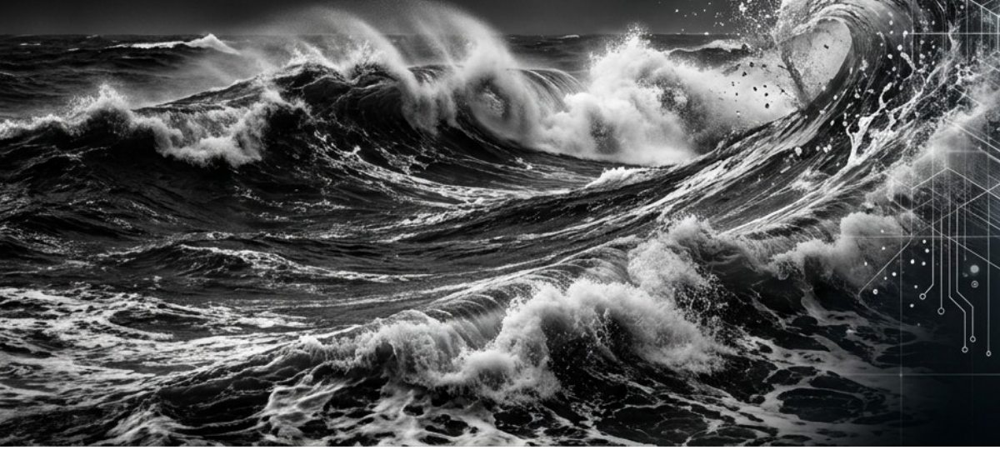
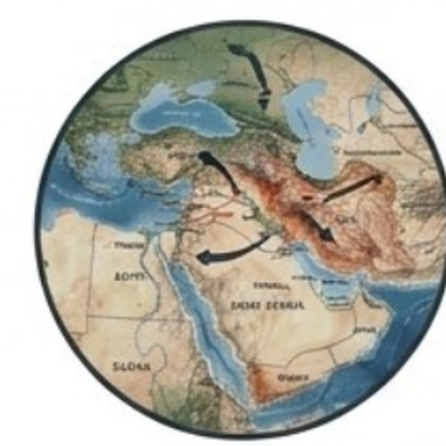
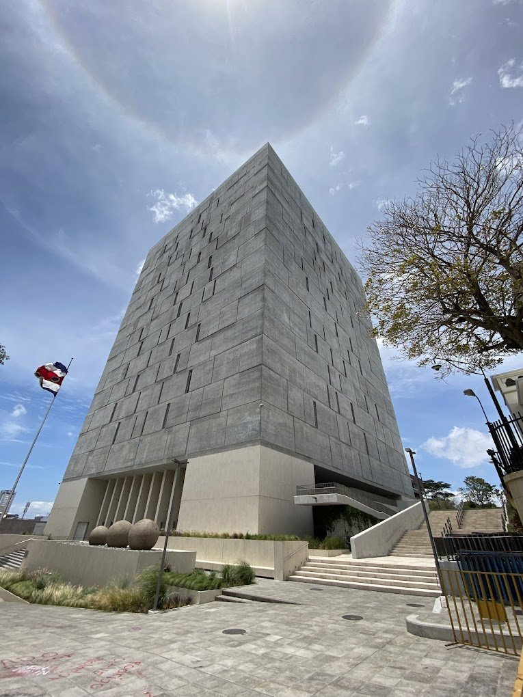

Tres balances y dos hallazgos, explicados con calma, para quien quiera entender el mundo.
Edición N.° 012 · Popular · actualizada·Semana del 29 de junio al 7 de julio de 2026·San José, Costa Rica

Boletín Semanal N.° 012 · Edición para todo público · San José, Costa Rica.
Estimado lector, estimada lectora:
Esta semana no hubo un solo titular gigante, sino algo más inquietante: un patrón. Estados Unidos dijo, en un documento oficial, que ya no quiere seguir siendo el "policía del mundo". Esa frase, que suena abstracta, se sintió muy concreta el 7 de julio, cuando la tregua en el estrecho de Ormuz se rompió otra vez y el petróleo volvió a subir. En la Asamblea Legislativa, el gobierno le recortó el presupuesto a la Corte, al Tribunal Electoral y a la Contraloría, mientras aumentaba el gasto en su propia oficina de comunicación. Y en un laboratorio de Minnesota, un grupo de científicos construyó, literalmente desde cero, algo que come, crece y se divide —pero que todavía no se puede llamar "vivo".
Son historias distintas, pero todas hablan de lo mismo: sistemas que estaban estables entran en turbulencia, y sistemas que estaban en crisis buscan un nuevo punto de apoyo. Se lo contamos como se lo contaríamos a un vecino, sentados en el corredor: sin perder seriedad, pero sin las palabras que solo entienden los especialistas.
— El equipo de ANCA-ADD
🎧 Escuche este boletín
La célula zombi que explica la política
Una conversación en audio que conecta la historia de la SpudCell —una célula que come y se divide, pero todavía no está viva— con el patrón que atraviesa el resto de la edición: sistemas que se abren al exterior sin terminar de sostenerse a sí mismos.
¿Qué significa que Estados Unidos ya no quiera ser el "policía del mundo"?
un vacío de poder que se sintió esta semana, cuando la tregua en el estrecho de Ormuz volvió a romperse

Sin un país que ordene el tablero, hasta las treguas se vuelven provisionales.
Qué pasó de verdad
A inicios de julio, Estados Unidos publicó su Estrategia de Seguridad Nacional con una frase que resume el momento: los días en que Washington sostenía el orden mundial "como Atlas" —el titán que cargaba el cielo sobre sus hombros— se terminaron. No es una frase suelta: los analistas la leen como el cierre formal de ochenta años de un país haciendo de árbitro global. El problema es que nadie ha tomado ese lugar todavía. Ucrania sigue sin un alto el fuego estable, Gaza quedó de facto partida entre Israel y lo que resta de Hamás, y en el estrecho de Ormuz —por donde pasa una quinta parte del petróleo del mundo— la tregua entre Irán y Estados Unidos, firmada apenas el 17 de junio, se sostenía con alfileres.
El 7 de julio esos alfileres cedieron. Irán atacó tres buques comerciales, incluyendo un barco catarí —Catar había sido uno de los países mediadores del acuerdo—. Estados Unidos respondió revocando el permiso que le había dado a Irán para vender petróleo y lanzó una serie de ataques de represalia. El nivel de amenaza en el estrecho subió a "severo" por primera vez desde mediados de junio. Un analista lo resumió sin rodeos: la revocación de esa licencia fue "una destrucción completa" del acuerdo que apenas tres semanas atrás parecía sostenerse.
Última hora (7 de julio): este ataque en Ormuz ocurrió apenas 31 horas después de que se cerrara la edición técnica de este boletín. Lo incorporamos aquí porque cambia el diagnóstico: lo que parecía una desescalada se convirtió en la prueba de que, sin un país que ordene el sistema, ni siquiera las treguas recientes son estables. Y también aclara algo importante: que Estados Unidos ya no quiera cargar con el orden mundial no significa que se haya vuelto pasivo. Cuando le convino, respondió con ataques militares directos y una sanción económica, por su cuenta y sin pedirle permiso a nadie. Se retira del trabajo de "árbitro" —pero no de la capacidad de imponerse cuando quiere.
Qué tan seguros estamos
Termómetro de certeza
✅Esto lo sabemos seguro: Estados Unidos formalizó por escrito el repliegue de su papel de garante global. Los ataques del 7 de julio en Ormuz y la revocación de la licencia petrolera a Irán están confirmados por múltiples medios.
🤔Esto creemos, pero no es seguro: que el acuerdo de junio esté completamente muerto. Irán advirtió que no volverá a negociar mientras sigan las amenazas, pero ninguna de las partes lo ha declarado roto de forma oficial.
💭Esto es solo una posibilidad: que surjan acuerdos regionales —entre países vecinos, sin depender de Washington— capaces de poner algo de orden donde antes lo ponía Estados Unidos.
Por qué importa, en cristiano
Imagínese un vecindario donde, durante ochenta años, una sola persona se encargaba de separar las peleas y hacer cumplir las reglas no escritas. Un día, esa persona anuncia que ya no quiere ese trabajo. No es que las peleas vayan a empezar todas al mismo tiempo, pero cualquier chispa —un barco atacado, una frontera cruzada— tiene menos probabilidad de apagarse rápido, porque ya no hay quien la apague por costumbre. Eso es lo que los analistas llaman un interregno: el viejo orden se fue, y el nuevo todavía no llega.
🌱 ¿Y en Costa Rica, qué tiene que ver?
Costa Rica ha construido su política exterior alrededor del multilateralismo: confiar en reglas y organismos internacionales en lugar de en la fuerza. Ese activo vale menos cuando el marco que lo sostenía —encabezado durante décadas por Estados Unidos— se debilita. La buena noticia es que el país también ha diversificado sus relaciones (con la Unión Europea, con Asia, con Israel); esa diversificación es exactamente la estrategia que más conviene en un mundo sin un solo árbitro.
¿Hacia dónde puede ir esto?
→
Orden regional: surgen acuerdos entre países vecinos que absorben parte del vacío dejado por Washington, sin llegar a un nuevo orden global único.
→
Turbulencia prolongada: las treguas siguen siendo frágiles y reversibles durante meses o años, sin que ningún actor logre imponer estabilidad duradera.
→
Escalada sin freno: algún conflicto —Ormuz, Ucrania, otro— se sale de control precisamente porque ya no hay quien lo contenga desde afuera.
Costa Rica · Política
¿Por qué el presupuesto se volvió el pleito más grande de la Asamblea esta semana?
el gobierno le recorta el 5% a los otros poderes del Estado, y la Contraloría advierte que podría "cerrarse técnicamente"

El mismo edificio donde se vota la ley es, ahora, el escenario del pulso entre poderes.
Qué pasó de verdad
El 24 de junio, el ministro de Hacienda, Rodrigo Chaves, anunció que le recortaría cerca del 5% del presupuesto a los demás poderes del Estado para lo que resta de 2026: unos ₡27.000 millones al Poder Judicial, ₡6.825 millones al Tribunal Supremo de Elecciones, ₡311 millones a la Defensoría de los Habitantes y ₡1.000 millones a la Contraloría. "Aquí no hay poderes con corona", dijo. El ajuste necesita el visto bueno de la Asamblea, donde el partido de gobierno tiene mayoría.
Las instituciones afectadas respondieron con preocupación real: el Poder Judicial aceptó recortar la mitad de lo pedido, pero el OIJ advirtió que investigaciones contra el crimen organizado se harían más lentas. El TSE avisó que la logística de las elecciones municipales de 2028 quedaría comprometida. Y la Defensoría alertó sobre un posible "cierre técnico". Mientras tanto —y esto llamó la atención de la oposición— el mismo gobierno que pedía austeridad aprobó, en la misma sesión, más dinero para el equipo de comunicación de Casa Presidencial.
Una aclaración importante. Esa misma semana, el ministro de Hacienda perdió el voto que tenía en la Junta del Banco Central. Es tentador leerlo como una "venganza" de la Asamblea contra el Ejecutivo, pero no lo es: se trata de una reforma de 2019, ligada a compromisos con la OCDE, que se activó automáticamente cuando por fin se llenó una plaza vacante desde hacía siete años. El propio gobierno propuso a esa persona. Mezclar los dos hechos como si fueran parte del mismo pleito sería una lectura equivocada.
Última hora (7 de julio): la Contraloría fue más lejos: dijo que solo puede recortar ₡100 millones sin afectar su trabajo de fiscalización, muy lejos de los ₡1.055 millones que le piden. Y el acuerdo que había avanzado sobre Crucitas —la mina de oro— se resquebrajó, con gobierno y oposición acusándose mutuamente de no cumplir lo pactado.
Qué tan seguros estamos
Termómetro de certeza
✅Esto lo sabemos seguro: el recorte del 5% fue anunciado con cifras concretas por institución, y el aumento al gasto de comunicación de Presidencia está documentado con las subpartidas exactas.
🤔Esto creemos, pero no es seguro: que el recorte, tal como está planteado, de verdad afecte la capacidad de investigar delitos o de organizar elecciones —depende del monto final que se apruebe.
💭Esto es solo una posibilidad: que el conflicto termine en los tribunales constitucionales si alguna institución considera que el recorte viola su autonomía.
Por qué importa, en cristiano
Costa Rica separa el poder en tres ramas —Ejecutivo, Legislativo, Judicial— más varios órganos independientes (Contraloría, TSE, Defensoría) precisamente para que nadie controle todo al mismo tiempo. Lo nuevo esta semana es que, por primera vez en mucho tiempo, un solo partido controla al mismo tiempo la Presidencia y la mayoría en el directorio de la Asamblea. Eso no es ilegal ni insólito en democracia, pero sí cambia el equilibrio: los órganos que deberían frenar al gobierno dependen, en parte, del dinero que ese mismo gobierno decide darles.
🌱 ¿Y en Costa Rica, qué tiene que ver?
Esta es, literalmente, la nota de Costa Rica. Lo que está en juego no es solo dinero: es la fortaleza de los contrapesos que han hecho del país una excepción institucional en la región —un Poder Judicial independiente, un TSE confiable, una Defensoría activa. El ajuste fiscal puede ser necesario (la deuda ronda el 60% del PIB), pero la manera en que se haga importa tanto como el monto.
¿Hacia dónde puede ir esto?
→
Ajuste negociado: los poderes acuerdan recortes distintos y justificados técnicamente, sin perder autonomía.
→
Imposición por mayoría: el oficialismo aprueba los montos originales; las instituciones afectadas recurren a la Sala Constitucional.
→
Parálisis y tribunales: el conflicto se traslada a la vía judicial y se estira durante meses sin resolverse en la Asamblea.
Ciencia · Instituciones
¿Por qué miles de científicos en Estados Unidos están pensando en irse del país?
recortaron más de 7.800 proyectos de investigación en un año — la mayor sacudida a la ciencia en 80 añosInvestigar cuesta dinero real: cuando el flujo se corta, el laboratorio se apaga.
Qué pasó de verdad
Desde 2025, el sistema científico de Estados Unidos —el mayor productor de conocimiento del mundo desde la Segunda Guerra Mundial— atraviesa lo que varios analistas describen como su mayor sacudida en ochenta años. Se cancelaron o suspendieron más de 7.800 proyectos de investigación financiados por el gobierno, muchos de ellos relacionados con temas que la administración actual considera incómodos: desinformación, enfermedades infecciosas, vacunas, estudios sobre grupos minoritarios. Una de las principales agencias de ciencias sociales del país cerró por completo en abril.
Hay también un "truco contable" revelador: aunque el Congreso rechazó los recortes más drásticos —los fondos totales incluso subieron un poco—, las agencias están dando menos becas nuevas, con más dinero cada una, a más años. En la práctica, muchos menos científicos jóvenes están recibiendo apoyo para empezar sus carreras. En una encuesta de la revista Nature, el 75% de los científicos consultados dijo estar considerando irse del país.
La historia no es solo de daño: el Congreso, con apoyo de ambos partidos, frenó los recortes más extremos, y los tribunales fallaron que congelar fondos de forma masiva era "arbitrario". Esa resistencia institucional funcionó como amortiguador. Y la ciencia, a pesar de todo, sigue produciendo hallazgos importantes —como el que le contamos en la siguiente historia.
Qué tan seguros estamos
Termómetro de certeza
✅Esto lo sabemos seguro: el número de subvenciones canceladas (más de 7.800) está documentado en los sistemas oficiales de seguimiento de las agencias. El freno del Congreso y de los tribunales también está confirmado.
🤔Esto creemos, pero no es seguro: que la "fuga de cerebros" que muestra la encuesta se convierta en una salida real y masiva de científicos del país. Pensarlo no es lo mismo que hacerlo.
💭Esto es solo una posibilidad: que otros países —europeos, China, o incluso naciones más pequeñas con instituciones estables— logren capturar ese talento que Estados Unidos podría estar perdiendo.
Por qué importa, en cristiano
Hacer ciencia no es gratis: cuesta laboratorios, salarios, reactivos, electricidad. Es como un motor que necesita gasolina constante para seguir andando; si le cortan el combustible, no se detiene de golpe, pero empieza a fallar. Lo que pasó en Estados Unidos es exactamente eso: no apagaron el motor completo, pero le redujeron el flujo de combustible de forma selectiva, y ese tipo de recorte tarda años en mostrar todo su daño —se nota cuando faltan los investigadores que no se formaron.
🌱 ¿Y en Costa Rica, qué tiene que ver?
Esto le importa al país en dos sentidos opuestos. Por un lado, Costa Rica depende de infraestructura científica de Estados Unidos —datos meteorológicos, financiamiento internacional, acceso a revistas— que se ha vuelto menos confiable. Por otro lado, si investigadores de primer nivel buscan dónde reubicarse, un país con universidades estables como la UCR o el TEC podría, en teoría, atraer parte de ese talento. Pero eso choca con la historia anterior: si Costa Rica recorta sus propias instituciones científicas por austeridad, pierde esa oportunidad antes de intentarla.
¿Hacia dónde puede ir esto?
→
El conocimiento se reparte: otros países captan investigadores y proyectos; la ciencia mundial se vuelve menos centrada en Estados Unidos.
→
Golpe con recuperación: se pierde una generación de científicos jóvenes, pero el sistema se estabiliza en unos años.
→
Deterioro largo: la incertidumbre sobre el presupuesto se vuelve permanente y la planificación científica de largo plazo se hace casi imposible.
Ciencia · Biología
¿De verdad construyeron una célula desde cero que come, crece y se divide?
sí — pero los propios científicos aclaran que todavía no está viva, y eso es lo más interesante del caso«SpudCell»: creada en el laboratorio a partir de piezas químicas no vivas, pero capaz de dividirse en dos.
Qué pasó de verdad
Un equipo dirigido por la bióloga sintética Kate Adamala, de la Universidad de Minnesota, anunció haber construido —a partir de piezas químicas, ninguna de ellas viva por sí sola— una célula artificial capaz de alimentarse, copiar su propio ADN, crecer y dividirse en dos: el ciclo completo que hace una célula común. Le pusieron el apodo de "SpudCell". El resultado se publicó el 2 de julio, y aquí va un dato clave: todavía no ha pasado por la revisión de otros científicos, el filtro de calidad habitual antes de dar un hallazgo por confirmado del todo.
La propia investigadora fue clara sobre lo que esto significa: "Hemos replicado en química lo que antes solo era posible en biología… esto demuestra que las funciones más básicas de la vida no necesitan ninguna chispa mágica misteriosa". Otros científicos, sin embargo, insisten en una aclaración importante: la célula no está viva por ninguna definición aceptada. No puede sobrevivir sin que le entreguen constantemente alimento y ciertas piezas fabricadas afuera (los "ribosomas", la maquinaria que arma proteínas), y no se divide indefinidamente. Uno de los científicos consultados la comparó con el primer vuelo de los hermanos Wright en 1903: que el aparato volara doce segundos no le dio al mundo un avión comercial de inmediato —pero fue el comienzo de todo lo que vino después.
Qué tan seguros estamos
Termómetro de certeza
✅Esto lo sabemos seguro: el experimento se publicó, y expertos externos al equipo confirmaron que la célula cumple el ciclo básico de alimentarse, crecer y dividirse.
🤔Esto creemos, pero no es seguro: que la revisión formal por pares —todavía pendiente— confirme exactamente todo lo reportado en el primer anuncio. Es lo esperable, pero aún no ha pasado.
💭Esto es solo una posibilidad: que esta técnica se use algún día para fabricar medicinas o materiales biológicos a demanda. Los propios autores dicen que eso está todavía a años de distancia.
Por qué importa, en cristiano
Para que algo cuente como "vivo" de verdad, necesita dos cosas: comer y respirar del entorno (eso la SpudCell ya lo hace), y también fabricar por sí misma todas sus propias piezas, sin depender de que alguien se las entregue desde afuera (eso todavía no lo logra). Es como un carro que puede echarse combustible solo, pero que todavía necesita que un mecánico externo le arme el motor cada cierto tiempo. La SpudCell es el primer caso de laboratorio que nos deja ver, con tanta claridad, exactamente dónde está esa línea entre lo que come y lo que de verdad vive.
🌱 ¿Y en Costa Rica, qué tiene que ver?
Costa Rica no va a competir construyendo células sintéticas —eso requiere laboratorios y presupuestos de país rico—. Pero el país sí tiene un activo real en este terreno: biodiversidad, una tradición fuerte en biología tropical (el legado del INBio —que cerró operaciones en 2015 por falta de presupuesto, aunque sus colecciones pasaron al Museo Nacional—, además de la UCR, la UNA y el CATIE) y una imagen internacional asociada a la vida. La pregunta, otra vez, es si el país logra participar del conocimiento que se construye a partir de esa riqueza natural, o si solo aporta la materia prima mientras la ganancia se queda en otro lado —el mismo dilema que ya vimos con los hongos y las mariposas en boletines anteriores.
¿Hacia dónde puede ir esto?
→
Se confirma y avanza: la revisión por pares respalda el hallazgo; el campo acelera hacia células sintéticas cada vez más completas.
→
Hito real, pero parcial: se confirma como avance importante, pero llegar a una célula totalmente autosuficiente toma más tiempo del esperado.
→
Se matiza: la revisión formal reduce el alcance de lo anunciado y se abre un debate sobre qué cuenta realmente como "vida sintética".
Economía · Energía
¿Por qué el respiro en el precio de la gasolina duró tan poco?
el petróleo venía bajando desde hace semanas, hasta que los ataques del 7 de julio en Ormuz lo hicieron saltar de nuevoEl precio venía cayendo con calma — hasta que la geopolítica volvió a meterse en la ecuación.
Qué pasó de verdad
Después del memorando de paz del 17 de junio entre Irán y Estados Unidos, y de que se anunciara una ruta más segura por el estrecho de Ormuz el 27 de junio, el precio internacional del petróleo empezó a bajar desde los máximos que había tocado durante la guerra —hasta 166 dólares el barril en marzo—. Para el 6 de julio, el crudo Brent rondaba mínimos de varios meses, por debajo de los 72 dólares. Para un país como Costa Rica, que importa el 100% de su combustible, esa tendencia prometía, con el tiempo, algo de alivio en el precio de la gasolina y el transporte.
Ese alivio duró poco. El 7 de julio, los mismos ataques a buques en Ormuz que le contamos en la primera historia de este boletín hicieron que Estados Unidos revocara la licencia que permitía a Irán vender su petróleo —la concesión más importante que Irán había obtenido a cambio de la tregua—. El Brent saltó de inmediato hacia los 76 dólares, y el nivel de riesgo del estrecho subió a "severo". El respiro no desapareció del todo, pero quedó condicionado a que la tregua se recomponga, y hoy eso se ve frágil.
Qué tan seguros estamos
Termómetro de certeza
✅Esto lo sabemos seguro: el precio del Brent bajó de forma sostenida hasta el 6 de julio y saltó con fuerza el 7, coincidiendo exactamente con los ataques en Ormuz y la revocación de la licencia petrolera.
🤔Esto creemos, pero no es seguro: cuánto tiempo tardará ese aumento en sentirse en el surtidor costarricense —el traslado no es inmediato ni automático.
💭Esto es solo una posibilidad: que el precio se estabilice pronto en niveles moderados. Depende enteramente de que la tregua en Ormuz se recomponga, algo que hoy no está garantizado.
Por qué importa, en cristiano
El precio del petróleo funciona como un termómetro conectado a Medio Oriente que todos llevamos en el bolsillo, aunque no lo veamos. Cuando hay calma en Ormuz, el termómetro baja y, con algo de rezago, baja también lo que pagamos por la gasolina. Cuando hay un ataque a un barco al otro lado del mundo, el termómetro sube casi al instante, mucho antes de que cualquier barril adicional llegue o deje de llegar realmente al mercado —porque lo que se mueve primero no es el petróleo, es el miedo a que falte.
🌱 ¿Y en Costa Rica, qué tiene que ver?
Aquí es donde las cinco historias de este boletín se cierran en círculo: un petróleo más caro presiona el costo del transporte y la inflación, y también encarece la factura de importación justo cuando el gobierno discute recortes presupuestarios por falta de margen fiscal (historia 2). Costa Rica no produce ni una gota de petróleo: todo lo que pase en Ormuz —a más de 13.000 kilómetros de distancia— nos llega directo a la bomba de gasolina.
¿Hacia dónde puede ir esto?
→
Se calma de nuevo: la tregua se recompone, Ormuz se estabiliza, y el precio vuelve a bajar hacia los niveles de antes del 7 de julio.
→
Vaivén constante: el estrecho se cierra y se abre de forma intermitente durante meses, y el precio oscila sin asentarse.
→
Nueva escalada: el acuerdo colapsa del todo, Ormuz se bloquea de forma más severa, y el precio vuelve a acercarse a los máximos de marzo.
Rincón de curiosidades
cositas para sorprender a la familia en la sobremesa
¿Sabía que...?
La palabra que usa Estados Unidos para describir su papel perdido —"Atlas"— viene del titán griego condenado a cargar el cielo sobre sus hombros para siempre. La metáfora no es casual: describe exactamente el peso de sostener un orden mundial.
¿Sabía que...?
El presupuesto que la Contraloría dice que puede recortar sin afectarse (₡100 millones) es apenas el 9,5% de lo que el gobierno le está pidiendo (₡1.055 millones). La diferencia entre esas dos cifras es, literalmente, todo el pleito.
¿Sabía que...?
La SpudCell tiene un genoma de unos 90.000 pares de bases —diminuto comparado con el genoma humano, que tiene más de 3.000 millones—. Aun así, es suficiente para completar un ciclo celular entero.
¿Sabía que...?
El estrecho de Ormuz, por donde pasa cerca del 20% del petróleo mundial, mide apenas 33 kilómetros de ancho en su punto más angosto —menos que la distancia entre San José y Cartago.
Lo que todavía queda en el aire
preguntas honestas, que nadie puede responder todavía con certeza
Tras los ataques del 7 de julio, ¿se recompondrá la tregua en Ormuz, o el memorando de junio quedará definitivamente roto?
¿Se procesará el ajuste presupuestario costarricense preservando la independencia de la Corte, el TSE y la Contraloría, o terminará en los tribunales constitucionales?
¿Logrará la crisis científica de Estados Unidos que otros países capten a los investigadores que se quieren ir, o el conocimiento simplemente se perderá?
¿Confirmará la revisión por pares lo que se anunció sobre la SpudCell, y cuánto falta realmente para una célula sintética que no dependa de nada externo?
¿Puede un país pequeño como Costa Rica convertir estos repliegues del "núcleo" —científico y geopolítico— en una oportunidad, o solo va a absorber sus costos?
Una palabra sobre cómo trabajamos. Detrás de cada una de estas historias hay un análisis técnico bastante más detallado: revisamos qué tan confiable es cada dato, estudiamos cómo se conectan los hechos entre sí, y miramos el lugar de Costa Rica en el mundo grande. Esa versión completa, con todos los códigos epistémicos y la lectura dinámica, también está disponible para quien quiera ir más al fondo.
Esta edición nace de una convicción sencilla: entender el mundo no debería ser un privilegio de unos pocos. Por eso le contamos las cosas con calma y sin palabras complicadas, pero sin recortarle la verdad —porque tratar a alguien como capaz de comprender es la forma más honesta de respetarlo.
Como siempre: lo que aquí se cuenta es análisis, no una bola de cristal ni un consejo de qué hacer. El futuro nadie lo tiene asegurado, ni nosotros tampoco.